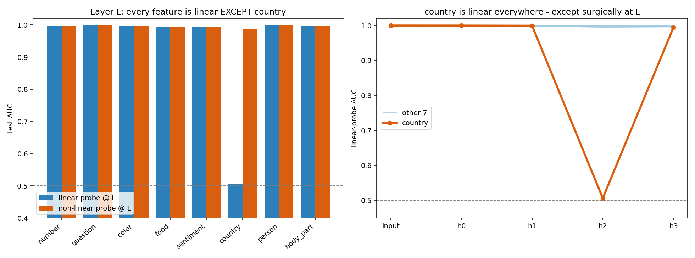
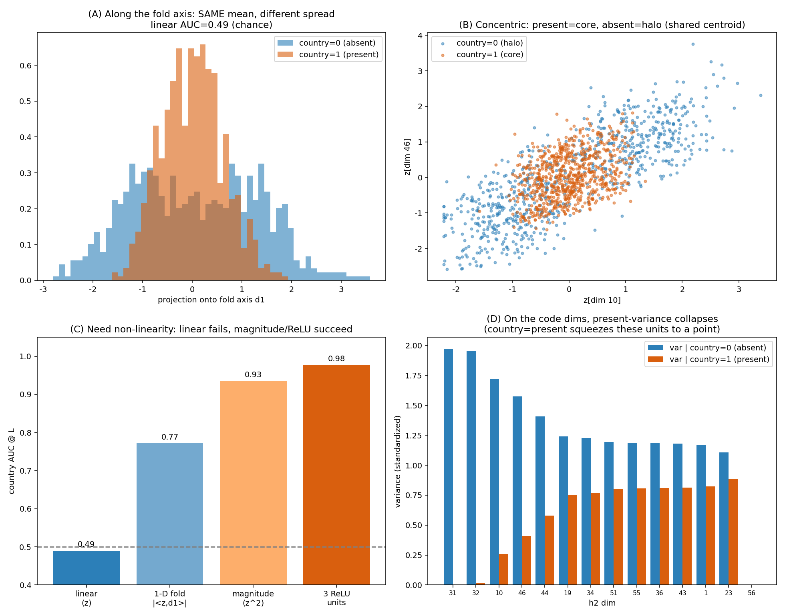
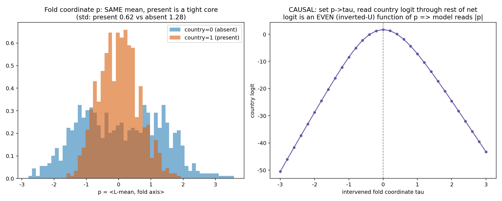
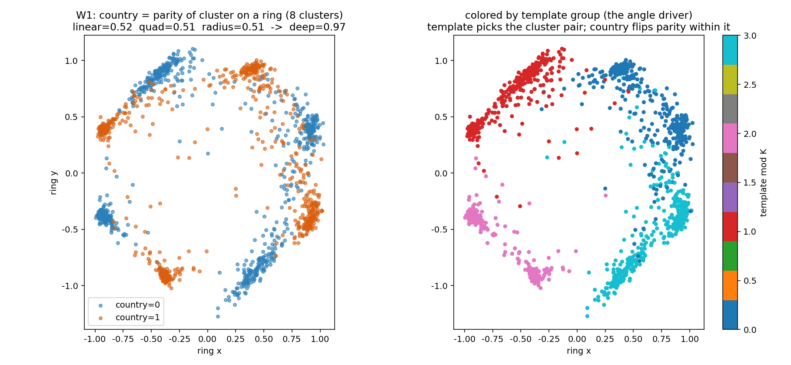
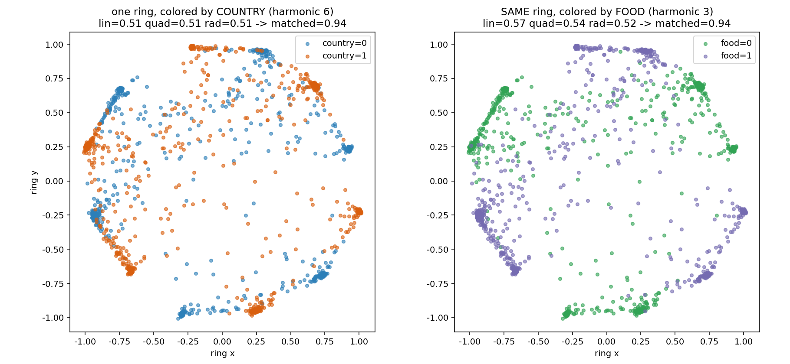
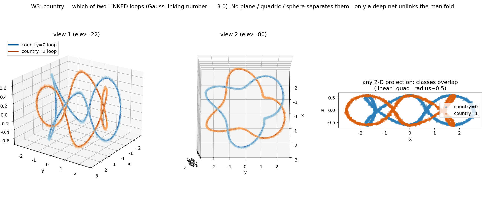
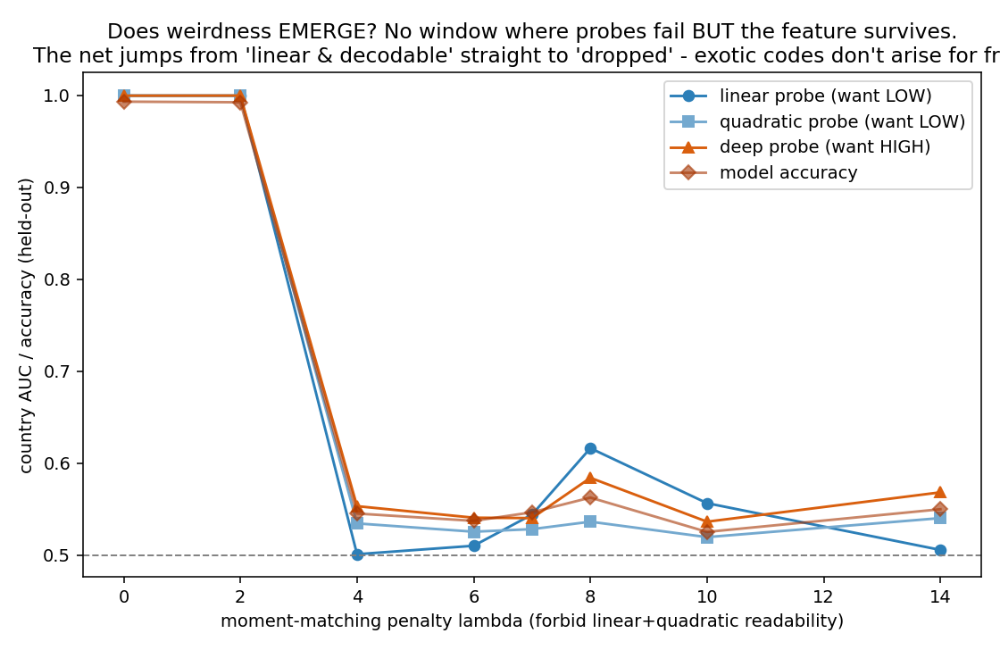
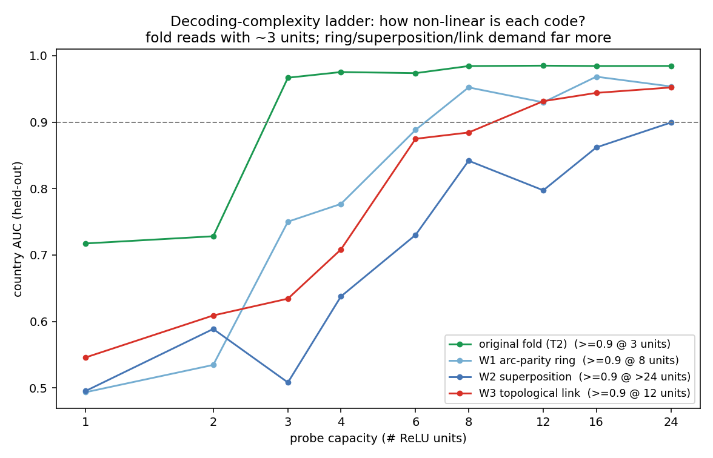

BlueDot · Technical AI Safety Puzzle #1 · my solution
The Fold
A small network was handed eight features to represent. Seven of them it laid out neatly, one clean direction each, exactly the way our interpretability tools assume. The eighth it hid. Not by throwing it away, but by folding a straight line in half, so that a linear probe, the workhorse of the whole field, reads pure noise while the feature sits there in plain sight. This is which feature it was, the origami trick the network used to bury it, and what happened when I tried to hide things in stranger ways still.
Needs comfort with vectors and a mental picture of ReLU, no heavy math Reading ~12 min · Includes figures you can drag, fold, and spin, next to the real analysis plots
scroll
01 · The line-up
Seven behave, one hides
The puzzle is small enough to hold in your head. A classifier reads a short scrap of text and flags eight things about it at once, and somewhere in the middle of the network, seven of those eight live as a single clean direction each. One does not. Find it, say how it is stored instead, and then, if you can, hide something in a stranger way than the network did.
The model is deliberately ordinary. A frozen all-MiniLM sentence encoder turns the text into a 384-dimensional vector, and a five-layer ReLU network on top predicts the eight labels, each with its own sigmoid, at better than 95% accuracy. The eight features are these, and one of them is the odd one out.
Here is the part that should bother an interpretability person, and it is the reason I think this puzzle is worth more than a puzzle. Point the standard tool at layer L, a linear probe, and ask it whether the network represents country, and it says no. The AUC is 0.507, a coin flip. Ask the same tool about the other seven and every one of them answers yes at 0.995 or better. The tool that most published claims of the form “the model does or does not represent X” quietly rest on is, here, confidently and completely wrong. Swap in a non-linear probe and country comes straight back out at 0.99. So the information was never gone. The linear probe simply could not see it.
linear probe · country 0.507 (chance)
linear probe AUCnon-linear probe AUCdashed line = chance (0.5)
One feature refuses the line. Every feature but country is a single readable direction at layer L. Country is the only one where a linear probe and a non-linear probe disagree, and they disagree by almost half an AUC point. Flip to Both to see the gap side by side.
Before reading anything into that, I wanted to be sure it was not just a weak probe. Six standard linear methods, logistic regression across a range of regularization strengths, a linear SVM, a ridge classifier, all land between 0.50 and 0.53 on country. An RBF-kernel SVM reaches 0.99. Bootstrapping the test set 2,000 times puts the linear AUC at 0.515 with a 95% interval of [0.501, 0.540], the non-linear AUC at 0.993, [0.988, 0.997], and the gap between them at 0.478, [0.452, 0.493], with no overlap at all. This is not an underpowered linear probe missing a faint linear signal. There is no linear signal to miss.
A surgical blind spot
The next clue is where the blindness lives. If you run the linear probe on country at every stage of the network, it is perfectly readable going in and perfectly readable coming out, and blind at exactly one layer in between. Entering the head it is linear at 1.00, one hidden layer in it is still 1.00, and then at layer L it collapses to 0.51, and the very next layer it is back at 0.99. No other feature does this. Whatever the network is doing to country, it does it inside a single layer and undoes it one layer later, which already tells you this is a construction, not an accident of the encoder.
country is linear entering and leaving layer L · blind only at L
the other seven (linear throughout)country (linear probe)
The V. Country is linearly present at the input (1.00) and at the previous hidden layer (0.999), goes dark at layer L (0.51), and is linear again the next layer (0.99). The dip is one layer wide. Something in layer L folds the feature away and the following layer unfolds it.

the receipt The actual run. Left, the probe bench: country is the lone linear failure. Right, the V across layers, drawn from the model itself.
02 · The fold
A straight line, folded in half
Knowing country is non-linear is the easy half. The interesting half is which non-linear shape, because there are many, and the geometry itself rules most of them out if you let it. I started by throwing away the obvious ones. The two classes share a centroid, the distance between their means is 0.013 and a linear discriminant scores 0.516, so nothing is separated by a mean shift. Country is also statistically independent of the other seven features, absolute correlation at most 0.02, so it is not quietly riding on some other label. The model went out of its way to store this the hard way.
The single most useful measurement is almost embarrassingly simple. A linear probe on the raw activations scores 0.49. A linear probe on the squared activations, a per-dimension magnitude readout, scores 0.935. Squaring is the entire difference between blind and sighted, which means the signal lives in a magnitude and not in any direction. And it is a magnitude in a specific little subspace, not overall activation energy, because the full activation norm is uninformative at 0.54. A handful of dimensions carry it.
linear on raw
0.49
a direction reads nothing
linear on squared
0.935
a magnitude reads it
centroid distance
0.013
the classes share a center
variance ratio
6.5×
absent spreads wider than present
Now the shape. Along the dominant direction, the absent class has roughly 6.5 times the variance of the present class. Present sits as a tight core at the center, absent forms a loose shell around it. And the covariance-difference spectrum has a single dominant eigenvalue, which is the detail that pins it down: an XOR or checkerboard code would leave two eigenvalues of opposite sign, an isotropic shell would leave many comparable ones. One eigenvalue means one axis, one fold.
The mechanism, in one line
Country arrives at layer L as an ordinary signed feature s. The layer holds units that read +s and units that read −s, and because ReLU(s) + ReLU(−s) = |s|, adding the two opposing projections throws the sign away and keeps the magnitude. That is the fold. It bends the signed line onto a radial shell, present near the origin and absent out on the surface, and the next layer inverts it so country is linear again at 0.99.
Here is that fold as an actual surface. The floor of the crease is where present lives, packed near zero; absent rides up the two walls. Grab it and turn it around, then flatten it back out.
drag to rotate
present · in the creaseabsent · up the wallsthe height is |s| — the magnitude a linear probe can’t read
The fold, in three dimensions. Unfolded, the two classes lie in one flat plane, spread along s but the same height, so a straight cut finds nothing. Fold it into z = |s| and absent rises up both walls while present stays in the valley floor. The height is the magnitude, and +s and −s get pressed to the same wall, which is the sign a linear probe went looking for and can no longer see.
Drag the slider below and watch the identity ReLU(s)+ReLU(−s)=|s| do its work. On the left the two ReLU units trade off as you move: for positive s only the +s unit fires, for negative s only the −s unit fires, and their sum traces a perfect V. On the right is what that does to the data, your value landing on a radial shell at distance |s|. Notice that s and −s drop onto the exact same place. The fold cannot tell them apart, and that is the point: it has erased the one thing a linear probe needs.
ReLU(+s)=1.45 · ReLU(−s)=0.00 · |s|=1.45
present (tight core)absent (outer shell)drag s · watch s and −s fold to the same radius
The absolute value, built from two ReLUs. The sum of an up-ramp and a down-ramp is a V, the absolute value. Feed a signed feature through it and every pair of opposite values collapses to one radius. Present, packed near zero, lands in the core; absent, spread wide, lands on the shell.

the receipt Same mean, different spread (A); core-and-halo geometry (B); only non-linear magnitude readouts work (C); the present class squeezes the code dimensions to a point (D).
03 · The proof
Make the model change its mind
Everything up to here is a picture of the activations, and a picture can lie. Maybe the core-and-shell geometry is real but the network reads country off something else entirely, and the fold is a coincidence I have talked myself into. The only way to settle that is to stop looking and start intervening. So I did: pick the fold coordinate, overwrite it by hand with a value τ of my choosing, and read the country logit out through the rest of the network, unchanged.
The result is as clean as this kind of thing ever gets. The country logit is an even function of τ, an inverted U that peaks at τ=0. Drive the magnitude to zero and the model predicts present. Push it out, in either direction, and it flips to absent, both directions, symmetrically. The readout depends on |τ| and ignores the sign entirely, which is the fold restated as a fact about the model's behavior rather than about my choice of axes. Move the slider and watch the verdict flip.
the model now predicts presentlogit=1.9 · p=0.87
your τits mirror −τ lands on the same logit
Causal, not correlational. I set the magnitude and the model's own prediction follows the absolute value. Zero magnitude reads present, large magnitude in either direction reads absent. A signed code would be a slope through the origin; an even inverted-U is the signature of |τ|.

the receipt The present class is a tight core in the fold coordinate (left), and intervening on that coordinate bends the country logit into an even inverted-U (right).
At layer L, country is the magnitude of a low-dimensional projection, a distance from a shared center, built by a ReLU absolute value and undone one layer later.
04 · Stranger hiding places
How weird can it get?
The fold is the network's own trick, and it is elegant, but it is also the mildest thing a non-linearity can do. The open-ended part of the puzzle asked whether I could build something weirder, so I had to decide what weirder even means. My bar was this: a representation is stranger if it defeats more of the standard interpretability tools while the feature stays fully decodable, and if it takes more probe capacity to pull back out. That is the property an audit actually cares about, because a linear-probe audit pointed at any of the three models below would report that country is not represented, and every one of them predicts country at 86 to 99 percent.
Each runs on the same frozen encoder. I shape a small subspace of one hidden layer into a target geometry with an auxiliary objective, while the head still has to classify all eight features, and the exotic feature is decodable only from the shaped subspace. Three hiding places, each worse than the fold for a probe.
W1 · metric, by angle
An angular ring
Country becomes the parity of which of eight clusters on a ring you land in. A nuisance variable picks the cluster pair, so both classes fill the whole ring at the same radius. Country is now the fourth angular harmonic, and a quadratic probe only reaches the second, so it is blind.
linear 0.51quadratic 0.51radial 0.51matched harmonic 0.97
W2 · two features, one plane
Superposition
One 2-D plane stores two features at once, country at the sixth harmonic and food at the third. Color by country and it alternates fast; color by food and it alternates slow. Each is at chance for linear, quadratic, and radial probes, and recovers only at its own frequency.
country lin 0.51 · matched 0.94food lin 0.57 · matched 0.94
W3 · topological
A knot you can't cut with a plane
The first two hide country by distance and angle. This one hides it in topology. I shape a 3-D subspace so the two classes become the two loops of a (2,6) torus link, wound on a torus and linked through each other, sharing a center and a radius. No plane, quadric, or sphere can separate two linked loops without one passing through it, so linear, quadratic, and radial probes all sit near 0.51. The proof that it is a genuine link, not a curved blob, is the Gauss linking number computed on the model's own learned activations: −3.01, a clean integer, stable from −3.00 to −3.07 across bin counts, and exactly zero on unlinked controls. A nonzero linking number is a topological invariant, so only a network deep enough to unlink the manifold can read the feature. Drag to spin it.
linear 0.51quadratic 0.51radial 0.51deep MLP 0.96Gauss linking number −3.01

the receipt · W1 Country as ring parity. The template picks the cluster pair; country flips the parity within it, so both classes cover the whole ring at one radius.

the receipt · W2 One plane, two features, at different angular frequencies. No linear or quadratic probe can separate them; a frequency-matched readout can.

the receipt · W3 Two linked loops from two angles, and a flat projection where the classes overlap completely. The linking number, computed on the model's activations, comes out a clean integer.
05 · The budget
Weirdness doesn't come for free
There is an obvious objection to the whole zoo, and it is the right one: I forced every one of those geometries with an auxiliary loss, so maybe a network left to itself would never build such a thing, and I have just proven that I can draw knots, not that networks do. So I tested it as directly as I could. I trained country with the ordinary classification loss but added a penalty on the class-conditional mean and covariance of the subspace, which makes the feature unreadable to linear and quadratic probes by construction, and, crucially, I specified no target shape. If a network can discover an exotic non-linear code on its own, there should be some penalty strength where the standard probes go blind but a deep probe still finds country. A window where weirdness pays for itself.
There is no such window. The moment the penalty is strong enough to beat the linear probe, the deep probe and the model's own accuracy fall with it, straight to chance, together. The network never re-encodes country in a cleverer code. It drops the feature.
no gap ever opens between the deep probe and the linear one
linear probequadratic probedeep probemodel accuracy
Exotic codes don't arise for free. If a hidden non-linear code were cheap to discover, the deep-probe line would stay high while the linear line dropped, opening a gap. It never does. The network jumps straight from “linear and decodable” to “gone.”
The reading I trust is a description-length one. Keeping a topologically complex manifold alive costs more parameters than the feature ever saves in loss, so under ordinary training the model would rather forget country than tie a knot to hide it. That is exactly why the fold is the code that emerges: an absolute value is the cheapest non-linear encoding there is, one op, and everything fancier has to be paid for out of a budget the network does not want to spend.
You can put a number on the cheapness. I measured the smallest non-linear probe, counted in hidden ReLU units, needed to recover country to AUC 0.90 from each representation. The fold needs about three units, the ring eight, the torus link twelve, and the two-feature superposition more than twenty-four. The codes line up on a single axis of decoding complexity, and the cheapest to decode is the only one that ever showed up unforced.
left of the frontier emerges unsupervised · right of it, only when forced
The difficulty ladder. Probe capacity needed to read each code. The fold sits at the reachable end, just inside the frontier where training will find it on its own. Every geometry I built by hand sits past that line, both harder to decode and out of reach without an explicit target.

the receipt The emergence test. Every line falls together. There is no regime where a hidden code survives that a linear probe can't already see.

the receipt Country AUC against probe capacity. The fold (green) is readable with a handful of units; every constructed code demands far more.
06 · The takeaway
What a blind probe costs
Strip the puzzle down and it is a tiny, clean existence proof: a feature can be fully present in a network, fully used by it, and read out at 99% by the right probe, while the linear probe, the tool a great deal of interpretability leans on, reports chance. If you had audited this model with the standard method you would have written down “does not represent country” and moved on, and you would have been wrong about a feature the model uses on every single input.
The budget finding is the part that is quietly reassuring, and the part that is quietly worrying, at the same time. Reassuring, because the cheapest place a feature can hide, the fold, is also the one a second-order probe catches: run your linear probe on the squared activations and the fold lights up at 0.94. That is a small, cheap addition to an audit. Worrying, because the reason the exotic codes never emerged in my test is that nothing was pushing for them, and the one pressure I left out is the one that matters for safety. A training process rewarded for evading an interpretability check is exactly the force that would pay the budget the fold never had to.
Why this sits in an AI-safety course
Interpretability is a lot of our plan for catching a model doing something we would not want. That plan mostly assumes features are linear, or at least that our probes can see them. This is a worked, reproducible case where that assumption fails completely and silently, and a first measurement of how much a network has to want to make it fail worse.
How I actually got here
The path was not clever so much as it was a matter of letting each measurement narrow the next. First I probed every feature at every layer, linear and non-linear, and the V for country fell out immediately: one feature, one layer, blind only there. Then the question was which non-linear shape, and I let the geometry throw candidates out rather than guessing. The shared centroid killed anything mean-based. The squared-activation probe scoring 0.94 said “second order, a magnitude.” The single dominant eigenvalue in the covariance-difference spectrum said “one axis, a fold,” not an XOR and not a shell. Activation patching then turned that picture into a cause I could stand behind. The whole of Task 3 was really me asking how far past the fold you can push a feature, and the emergence test was the part that genuinely surprised me, because I went in expecting to find a window where weirdness pays off, and there just wasn't one.
I tried to break every claim before believing it. Every linear method I could think of left country at chance while non-linear ones recovered it, so it is not an underpowered probe. I cross-validated the magnitude probe five ways and bootstrapped the headline numbers for intervals. For the topological model I checked that the linking number is stable across bin counts and drops to exactly zero on unlinked controls. And the honest limitations: the Task 3 models classify country at 86 to 99 percent, under the original model's 96, because a code that is harder for a probe to decode is harder for the model's own head too; and W2's food feature keeps a small linear leak at 0.57 rather than a clean 0.50, a residue of uneven template-group sizes.
The name map
The foldthe answer
ReLU(s) + ReLU(−s) = |s|. Two opposing ReLU units add up to an absolute value, folding a signed feature onto a magnitude and discarding the sign a linear probe would need.
Layer Lwhere it hides
The post-ReLU output of hidden layer 2. Country is linear entering it and leaving it, and non-linear only at L itself.
Linear probethe blind tool
A single direction fit to read a feature off activations. Scores country at chance (0.507) despite the feature being fully present.
Activation patchingthe proof
Overwriting the fold coordinate with a chosen value and reading the logit downstream. The even inverted-U response is causal evidence for |τ|.
Gauss linking numberW3's invariant
An integer counting how many times two loops wind through each other. Computed on the model's activations it comes out −3.01, proving a genuine topological link.
The budgetthe real finding
A network has limited room for representational complexity. The fold is the cheapest non-linear code and the only one that emerges unsupervised; everything stranger has to be paid for.